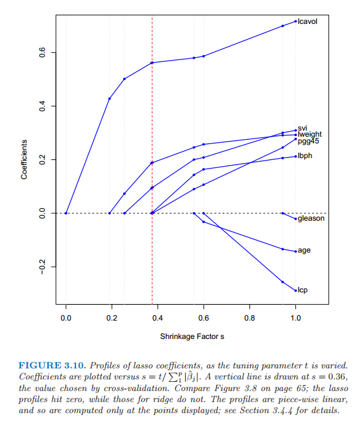
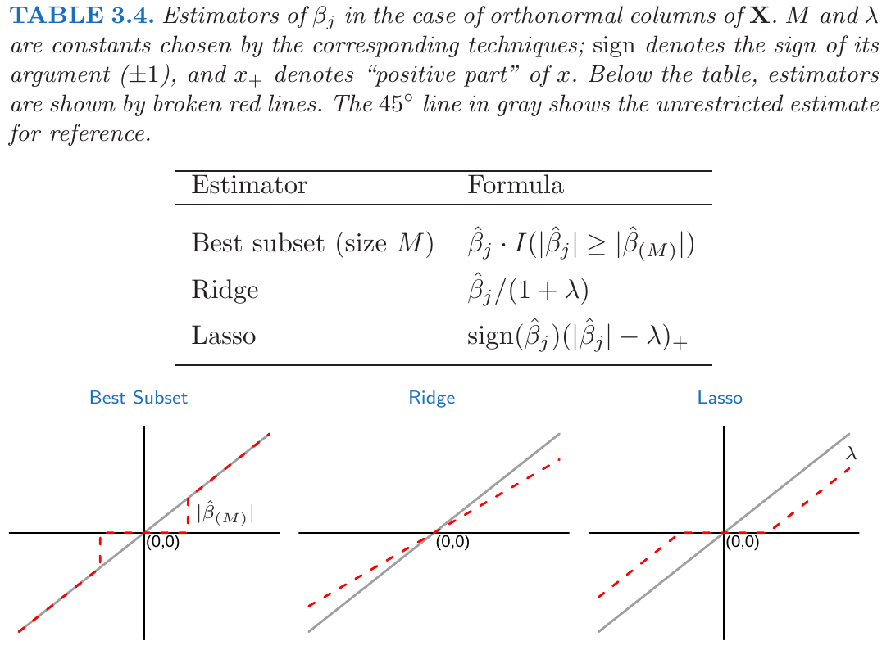
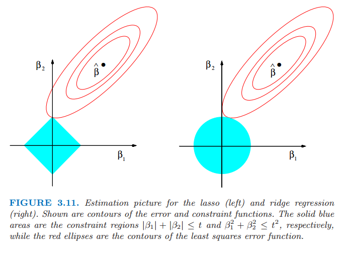
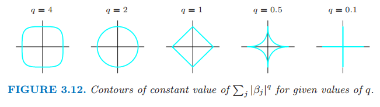
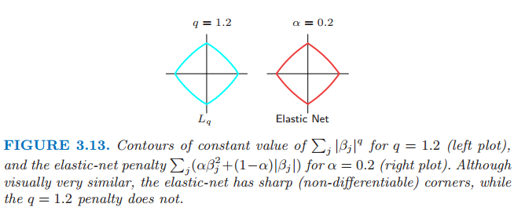
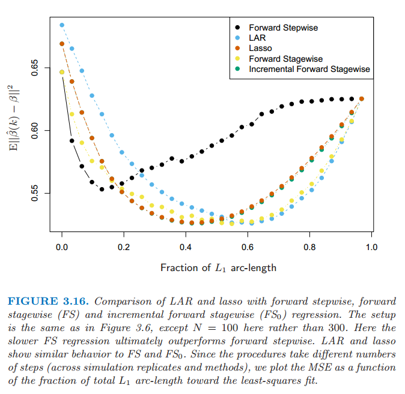

收缩的方法
| 原文 | The Elements of Statistical Learning |
|---|---|
| 翻译 | szcf-weiya |
| 时间 | 2016-09-30:2016-10-14 |
通过保留预测变量的子集并且丢弃剩余的，子集的选择得到一个可解释的、预测误差可能比全模型低的模型。然而，因为这是一个离散的过程——变量不是保留就是丢弃——经常表现为高方差，因此不会降低全模型的预测误差。收缩方法更加连续，而且不会遭受高易变太大的影响。
岭回归
岭回归通过对回归系数的大小加上惩罚因子来收缩回归系数。岭回归的系数使得惩罚的残差平方和最小
这里$\lambda\ge 0 $是控制收缩数量的参数：$\lambda$值越大，收缩的程度越大。系数向零收缩（并且彼此收缩到一起）。通过参数的平方和来惩罚的想法也用于神经网络，也被称作加权衰退（weight decay）（第11章）。
岭回归问题可以等价地写成
上式用参数显式表达了对回归参数大小的约束。(3.41)中的$\lambda$和(3.42)中的$t$一一对应。当在线性回归模型中有许多相关变量，它们的系数可能不充分确定且有高方差。某个变量的较大的正系数可以同相关性强的变量上差不多大的负系数相互抵消。通过对系数加入大小限制，如（3.42），这个问题得以减轻。
weiya注：这里说的是，在没有对参数大小进行限制前，会存在一对相关性强的变量，当它们系数取值符号相反，但绝对值差不多大，会大大增加方差，这也就是高方差的体现，但其实它们的合作用效果为近似为0,所以考虑引进对参数大小的惩罚。
对输入按比例进行缩放或放大时，岭回归的解不相等，因此求解（3.41）前我们需要对输入进行正规标准化。另外，注意到惩罚项不包含截距$\beta_0$。对截距的惩罚会使得过程依赖于$\mathbf{Y}$的初始选择；也就是，对每个$y_i$加上常数$c$不会简单地导致预测会偏离同样的量$c$。可以证明（练习3.5）经过中心化输入的再参量化，每个$x_{ij}$用$x_{ij}-\bar x_j$来替换，(3.41)的解可以分成两部分。我们用$\bar y=\frac{1}{N}\sum_1^Ny_i$来估计$\beta_0$。剩余的参数利用中心化的$x_{ij}$通过无截距的岭回归来估计。今后我们假设中心化已经完成，则输入矩阵$\mathbf X$有$p$（不是$p+1$）列。
将(3.41)的准则写成矩阵形式
可以简单地看出岭回归的解为
其中$\mathbf{I}$为$p\times p$单位矩阵。注意到选择二次函数惩罚$\beta^T\beta$,岭回归的解仍是$\mathbf{y}$的线性函数。解在求逆之前向矩阵$\mathbf{X^TX}$的对角元上加入正的常数值。这样会使得问题非奇异，即使$\mathbf{X^TX}$不是满秩，而且这是第一次将岭回归引入统计学中（Hoerl and Kennard,1970）的主要动力。传统的岭回归的描述从定义（3.44）开始。我们选择通过(3.41)和(3.42)来阐述，因为这两式让我们看清楚了它是怎样实现的。
图3.8展示了前列腺癌例子的岭回归系数估计，绘制成关于$df(\lambda)$的函数，$df(\lambda)$为由惩罚$\lambda$得到的有效自由度（effective degrees of freedom）（在p68的式(3.50)中定义）。在正规化输入的情形下，岭回归估计仅仅是最小二乘估计的缩小版本，也就是$\hat{\beta}^{ridge}=\hat{\beta}/(1+\lambda)$

图3.8 当惩罚参数$\lambda$不同时，前列腺癌例子岭回归的轮廓。画出系数关于有效自由度$df(\lambda)$的曲线。垂直直线画在$df=5.0$处，这是由交叉验证选择出来的。
当给定一个合适的先验分布，岭回归也可以从后验分布的均值或众数得到。具体地，假设$y_i \sim N(\beta_0+x^T_i\beta,\sigma^2)$,参数$\beta_j$的分布均为$N(0,\tau^2)$,每个都相互独立。则当$\tau^2$和$\sigma^2$值已知时，$\beta$后验分布密度函数的对数值(的负数)与（3.41）中花括号里面的表达式成比例(weiya 注：原文直接说与花括号的表达式相等，但应该是常数倍)，且$\lambda=\sigma^2/\tau^2$(练习3.6[^Ex3.7])。因此岭回归估计是后验分布的众数；又分布为高斯分布，则也是后验分布的均值。
weiya注：
$\color{red} 疑问：C是多少？$ 通过 来确定C
取对数，有
则$\lambda=\frac{\sigma^2}{\tau^2}$,且岭回归估计是后验分布的众数。
中心化输入矩阵$\mathbf{X}$的奇异值分解(SVD)让我们进一步了解岭回归的本质。这个分解在许多统计方法分析中非常有用。$N\times p$阶矩阵$\mathbf{X}$的SVD分解有如下形式
这里$\mathbf{U}$和$\mathbf{V}$分别是$N\times p$和$p\times p$的正交矩阵，$\mathbf{U}$的列张成$X$的列空间，$\mathbf{V}$的列张成$X$的行空间。$\mathbf{D}$为$p\times p$的对角矩阵，对角元$d_1\ge d_2 \ge \cdots \ge d_p \ge 0$称作$\mathbf{X}$的奇异值。如果一个或多个$d_j=0$,则$\mathbf{X}$为奇异的。
weiya 注：（以下关于奇异值分解内容来自张贤达的《矩阵分析与应用》）
奇异值分解最早由Beltrami在1873年对实正方矩阵提出来的。Beltrami从双线性函数 出发，通过引入线性变换 将双线性函数变为 式中 若选择$U$和$V$为正交矩阵，则他们的选择各存在$n^2-n$个自由度。他提出利用这些自由度使矩阵$S$的非对角元为0，即矩阵$S=\Sigma=diag(\sigma_1,\sigma_2,\ldots,\sigma_n)$为对角矩阵。则 这是Beltrami于1873年得到的实正方矩阵的奇异值分解。后来，Autonne于1902年把奇异值分解推广到复正方矩阵；Eckart与Young于1939年又进一步把它推广到一般的长方形矩阵。因此，现在常将任意复长方矩阵奇异值分解定理称为Autonee-Eckart-Young定理，详见下述
令$A\in R^{m\times n}$(或$C^{m\times n}$),则存在正交（或酉）矩阵$U\in R^{m\times m}$(或$C^{m\times m}$)和$V\in R^{n\times n}$(或$C^{n\times n}$)使得 式中 且$\Sigma_1=diag(\sigma_1,\sigma_2,\ldots,\sigma_r)$,其对角元素按照顺序 排列
以下说明来自wiki: 这里的奇异值分解称作Thin SVD 只有$U$中对应$V^T$中行向量的$n$个列向量被计算，$U$的其它列不被计算。$U_n$为$m\times n$,$\Sigma_n$为$n\times n$的对角矩阵，$V$是$n\times n$
利用奇异值分解经过一些简化我们可以最小二乘拟合向量写成
注意到$\mathbf{U}^Ty$是$\mathbf{y}$关于正交基$\mathbf{U}$的坐标。同时注意同(3.33)的相似性；$\mathbf{Q}$和$\mathbf{U}$是$\mathbf{X}$列空间两个不同的正交基（练习3.8）。
其中$\mathbf{u}_j$为$\mathbf{U}$的列向量。注意到因为$\lambda \ge 0$,我们有$d_j^2/(d^2_j+\lambda)\le 1$.类似线性回归，岭回归计算$\mathbf{y}$关于正规基$\mathbf{U}$的坐标。通过因子$d^2_j/(d^2_j+\lambda)$来收缩这些坐标。这意味着更小的$d_j^2$会在更大程度上收缩基向量的坐标。
$d_j^2$值小意味着什么？中心化矩阵$\mathbf{X}$的奇异值分解是表达$\mathbf{X}$中主成分变量的另一种方式。样本协方差矩阵为$\mathbf{S={\color{red} E((X-EX)^T(X-EX))=}X^TX}/N$,并且从(3.45)式我们得到
上式是$\mathbf{X^TX}$(也是$S$,取决于因子$N$)的特征值分解(eigen decomposition)。特征向量$v_j$($\mathbf{V}$的列向量)也称作$\mathbf{X}$的主成分（或Karhunen-Loeve）方向。第一主成分方向$v_1$有下面性质：$\mathbf{z}_1=\mathbf{X}v_1$在所有$\mathbf{X}$列的标准化线性组合中有最大的样本方差。样本方差很容易看出来是
事实上$\mathbf{z}_1=\mathbf{X}v_1=\mathbf{u}_1d_1$。引申变量$\mathbf{z_1}$称作$\mathbf{X}$的第一主成分，并且因此$\mathbf{u_1}$是标准化的第一主成分。后面的主成分$z_j$有最大的方差$d_j^2/N$,与前一个保持正交。相反地，最后一个主成分有最小的方差。因此最小的奇异值$d_j$对应$\mathbf{X}$列空间有最小方差的方向，并且岭回归在这些方向上收缩得最厉害。
图3.9图示了两个维度下一些数据点的主成分。如果我们考虑在这个区域（Y轴垂直纸面）内拟合线性曲面，数据的结构形态使得我们确定在长方向下的梯度比短方向更精确。岭回归防止在短方向上估计梯度可能存在的高方差。隐含的假设是响应变量在输入高方差的方向上往往有很大不同。这往往是个合理的假设，因为预测变量经常是选来研究的，因为他们区别于响应变量，但是不需要保持一般。

图3.9 一些输入数据点的主成分。最大主成分是使得投影数据方差最大的方向，最小主成分是使得方差最小的方向。岭回归将$\mathbf{y}$投射到这些成分上，然后将低方差成分的系数比高方差收缩得更厉害。
在图3.7中我们已经画了预测误差估计值关于$df(\lambda)$的曲线
上面$\lambda$的单调递减函数是岭回归拟合的有效自由度。通常在有$p$个变量的线性回归拟合中，拟合的自由度为$p$，也就是无约束参数的个数。想法是尽管岭回归拟合中所有的$p$个系数都不为0，但是它们在由$\lambda$控制的约束方式中拟合。注意到当$\lambda=0$（没有规范化）时$df(\lambda)=p$，并且当$\lambda\rightarrow \infty$时$df(\lambda)\rightarrow 0$。当然总是对于截距会多一个自由度，在前面已经去掉了。这个定义将在3.4.4节和7.4-7.6节中详细介绍。图3.7中最小值在$df(\lambda)=5.0$处。表3.3显示了岭回归将全最小二乘估计的测试误差减少了一小部分。
Lasso
weiya注：
lasso是下面这句话的首字母缩写
Least absolute shrinkage and seleetion operator
lasso像岭回归一样是个收缩方法，有微妙但很重要的区别。lasso估计定义如下
正如在岭回归中一样，我们可以通过标准化预测变量对常数$\beta_0$参再量化；$\hat{\beta}_0$的解为$\bar{y}$,并且后面我们拟合无截距的模型（练习3.5）.在信号处理中，lasso也被称作基本追求（basis pursuit）(Chen et al., 1998)
我们也可以把lasso问题等价地写成拉格朗日形式
注意到与岭回归问题（3.42）或（3.41）的相似性：$L_2$的岭回归惩罚$\sum_1^p\beta^2_j$被$L_1$的lasso惩罚$\sum_1^p\vert\beta_j\vert$代替。后一约束使得解在$y_i$处非线性，并且在岭回归中没有相近的形式表达。计算lasso的解是一个二次编程问题，尽管我们在3.4.4节看到当$\lambda$不同时计算解的整个路径存在与岭回归同样计算花费的有效的算法。由于该约束的本质，令$t$充分小会造成一些参数恰恰等于0。因此lasso完成一个温和的连续子集选择。如果所选的$t$大于$t_0=\sum_1^p\vert\hat{\beta}_j\vert$(其中$\hat{\beta}_j=\hat{\beta}_j^{ls}$,$\hat{\beta}_j^{ls}$为最小二乘估计)，则lasso估计为$\hat{\beta}_j$。另一方面，当$t=t_0/2$，最小二乘系数平均收缩$50\%$。然而，收缩的本质不是很显然，我们将在3.4.4节进一步研究。类似在变量子集选择中子集的大小，或者岭回归的惩罚参数，应该自适应地选择$t$使得预测误差期望值的估计最小化。
图3.7中，为了方便解释，我们已经画出lasso的预测误差估计关于标准化参数$s=t/\sum^p_1\vert\hat{\beta}_j\vert$的曲线。通过10-折交叉验证选择$s\approx 0.36$;这导致4个系数设为0（表3.3的第5列）。最终模型有第二低的测试误差，比全最小二乘模型略低，但是测试误差估计的标准误差（表3.3的最后一行）相当大。
图3.10显示了当惩罚参数$s=t/\sum_1^p\vert\hat{\beta}_j\vert$不同时的lasso系数。当$s=1.0$时为最小二乘估计；当$s\rightarrow 0$时下降为0.该下降不总是严格单调的，尽管例子中确实是。在$s=0.36$处画了垂直直线，该值通过交叉验证来选择。

图3.10 当惩罚参数$t$变化时的lasso系数曲线。图中画了系数关于$s=t/\sum^p_1\vert\hat{\beta}_j\vert$的曲线。垂直直线画在$s=0.36$处，该值通过交叉验证来选择。比较65页的图3.8，lasso曲线会达到0，然而岭回归不会。曲线是分段线性的，所以只计算显示点处的值；详见3.4.4节。
讨论：子集的选择，岭回归，Lasso
这部分我们讨论并且比较至今为止约束线性回归模型的三种方法：子集选择、岭回归和lasso。
在正规输入矩阵的情况下，三种过程都有显式解。每种方法对最小二乘估计$\hat{\beta}_j$应用简单的转换，详见表3.4。

表3.4 在$\mathbf{X}$为正规列情形下$\beta_j$的估计值。$M$和$\lambda$是通过对应的手段选择的常数；符号标记变量的符号（$\pm 1$）,而且$x_+$记$x$的正数部分。下面的表格中，估计值由红色虚线来显示。灰色的$45^{\circ}$直线作为参照显示了无约束的估计。
岭回归做等比例的收缩。lasso通过常数因子$\lambda$转换每个系数，在0处截去。这也称作“软阈限”，而且用在5.9节中基于小波光滑的内容中。最优子集选择删掉所有系数小于第$M$大系数的变量；这是“硬阈限”的一种形式。
回到非正交的情形，一些图片帮助了解它们之间的关系。当只有两个参数时图3.11描绘了lasso（左）和岭回归（右）。残差平方和有椭圆形的等高线，以全最小二乘估计为中心。岭回归的约束区域为圆盘$\beta_1^2+\beta_2^2\le t$,lasso的约束区域为菱形$\vert\beta_1\vert+\vert\beta_2\vert\le t$。两种方式都寻找当椭圆等高线到达约束区域的第一个点。与圆盘不同，菱形有角；如果解出现在角上，则有一个参数$\beta_j$等于0。当$p>2$,菱形变成了偏菱形，而且有许多交，平坦的边和面；对于参数估计有更多的可能为0.

图3.11 lasso(左)和岭回归（右）的估计图片。图中显示了误差的等高线和约束函数。实心蓝色区域分别为约束区域$\vert\beta_1\vert+\vert\beta_2\vert\le t$以及$\beta^2_1+\beta_2^2\le t^2$，红色椭圆为最小二乘误差函数的等高线。
我们可以把岭回归和lasso一般化，并且可以看成是贝叶斯估计。考虑下面准则
其中$q\ge 0$。图3.12显示了两个输入情形下常数值$\sum_j\vert\beta_j\vert^q$的等高线。

图3.12 给定值$q$下常数值$\sum_j\vert\beta_j\vert^q$的等高线。
考虑$\vert\beta_j\vert^q$作为$\beta_j$的先验概率密度的对数值，同样有参数先验分布的等高线。$q=0$对应变量子集选择，惩罚项简单地统计非零参数的个数；$q=1$对应lasso，$q=2$对应岭回归。注意到$q\le 1$，先验在方向上不是均匀的，而是更多地集中在坐标方向上。对应$q=1$情形的先验分布是关于每个输入变量是的独立二重指数分布（或者Laplace分布），概率密度为$(1/2\tau)exp(-\vert\beta\vert)/\tau$并且$\tau=1/\lambda$。$q=1$的情形（lasso）是使得约束区域为凸的最小$q$值；非凸约束区域使得优化问题很困难。
从这点看，lasso、岭回归和最优子集选择是有着不同先验分布的贝叶斯估计。然而，注意到它们取自后验分布的众数，即最大化后验分布。在贝叶斯估计中使用后验分布的均值更加常见。岭回归同样是后验分布的均值，但是lasso和最优子集选择不是。
再一次观察准则（3.53），我们可能尝试除0，1，2外的其它$q$值。尽管有人可能从数据中估计$q$,我们的经验是为了多余的方差不值得。$q\in (1,2)$表明lasso和岭回归之间的权衡。当$q>1$时尽管$\vert\beta_j\vert^q$在0处可导，但是并没有lasso（$q=1$）的令系数恰巧为零的性质。部分由于这个原因并且考虑计算易处理，Zou和Hastie在2005年引入弹性惩罚
一种岭回归和lasso之间的不同的平衡。图3.13比较了$q=1.2$下的$L_q$惩罚以及$\alpha=0.2$的弹性网惩罚；很难从肉眼来观察出差异。弹性网像lasso一样选择变量，同时像岭回归一样收缩相关变量的系数。同时考虑了$L_q$惩罚的计算优势。我们将在18.4节介绍弹性网惩罚。

图3.13 $q=1.2$时$\sum_j\vert\beta_j\vert^q$为常数值的轮廓线（左图）以及$\alpha=0.2$时弹性网惩罚$\sum_j(\alpha\beta_j^2+(1-\alpha)\vert\beta_j\vert)$为常数值的轮廓线（右图）。尽管看起来很相似，弹性网有尖角（不可导），而$q=1.2$的惩罚不会有尖角。
最小角回归
最小角回归（LAR）是相对较新的方法（2004年Efron等人），而且可以看成是一种向前逐步回归（3.3.2节）的“民主”版本。正如我们所看到的，LAR与lasso联系紧密，并且事实上提供了如图3.10所示的计算整个lasso路径的非常有效的算法。
weiya 注： 在Efron的论文中，最小角回归缩写为LARS（S表示“Lasso”和“Stagewise”），我们这里仍以ESL书上的缩写为准——LAR
向前逐步回归逐步建立了一个模型，每次添加一个变量。每一步，它选出最好的变量加入活跃集，然后更新最小二乘来加入所有的活跃变量。
最小角回归采用类似的策略，但是仅仅加入一个变量应有的程度。第一步它确定与响应变量最相关的变量。不是完全的拟合该变量，LAR使得该变量的系数向最小二乘值连续变化（造成它与进化的残差之间的相关系数绝对值降低）。只要另一个变量在与残差的相关性达到，则该过程暂停。第二个变量加入活跃集，然后它们的系数一起以保持相关性连接以及降低的方式变化。这个过程一直继续直到所有的变量都在模型中，然后在全最小二乘拟合处停止。算法3.2给出了详细过程。第5步的终止条件需要一些解释。如果$p>N-1$，LAR算法经过$N-1$步达到0残差解（-1是因为我们已经对数据进行了中心化）
算法 3.2 最小角回归
- 对预测变量进行标准化处理得到零均值和标准差。从残差向量$\mathbf{r=y-\bar{y}},\beta_1,\ldots,\beta_p=0$.
- 找出与$\mathbf{r}$最相关的预测变量$\mathbf x_j$
- 从0开始移动$\beta_j$一直到最小二乘系数$\langle\mathbf x_j, \mathbf r\rangle$, 直到存在其它的预测变量$\mathbf x_k$使得其与当前残差的相关性等于$\mathbf x_j$与当前残差的相关性。
- 在由当前残差在$(\mathbf x_j,\mathbf x_k)$上的联合最小二乘系数方向上移动$\beta_j$和$\beta_k$，直到存在其它的预测变量$x_l$与当前残差的相关性与当前残差与$(\mathbf x_j,\mathbf x_k)$的相关性相等。
- 按这种方式继续直到所有的$p$个预测变量加入到模型中。经过$min(N-1, p)$步，我们达到了全最小二乘的解。
假设$\cal A_k$是第$k$步开始时的变量活跃集，$\beta_{\cal A_k}$为这一步中变量的系数向量；其中有$k-1$个非零值，刚刚进入的变量系数值为0.如果当前残差为$\mathbf r_k=\mathbf y-\mathbf X_{\cal A_k}\beta_{\cal A_k}$,则当前步的方向为
系数然后迭代为 $\beta_{\cal A_k} (\alpha) = \beta_{\cal A_k} + \alpha · \delta_k$.练习3.23证明这种方式下选择的方向满足断言：保证相关系数结合和递减（tied and decreasing）。如果该步的开始拟合向量为$\hat{\mathbf f}k$,则迭代为$\hat{\mathbf f}_k(\alpha)=\mathbf f_k+\alpha\cdot\mathbf u_k$,其中$\mathbf u_k=\mathbf X{\cal A_k}\delta_k$是新的拟合方向。“最小角”由该过程的几何解释得到；$\mathbf u_k$使得活跃集${\cal A}_k$中的预测变量间的角度最小（练习3.24）。图3.14使用模拟数据显示了相关系数的绝对值下降以及每一步LAR算法的加入行列。

图3.14：通过6个预测变量的拟合数据集，每一步LAR过程中的相关性绝对值的变化。图像上方的标签表示在每一步哪些变量加进了活跃集。步长是用单位$L_1$弧长来测量的。

图3.15：左图显示了LAR系数作为$L_1$长度的函数在模拟数据上的图象。右图显示了Lasso的图象。它们大概在$L_1$弧长为18之前（深蓝色的系数曲线通过0）都是完全相同的.
通过构造LAR的系数以一种分段线性的方式进行改变。图3.15（左图）显示了LAR系数曲线作为$L_1$弧长[^L1 arc length]的函数曲线。注意到我们不需要走很小的步以及重新检查步骤3的相关系数；应用预测变量的协方差和算法的分段线性性质，我们可以在每一步开始计算出确切的步长（练习3.25）。
图3.15的右图展示了对同样数据的lasso系数曲线。几乎与左图相同，当绿色曲线通过0时首次出现不同。对于前列腺癌数据，LAR系数曲线显示与图3.10的lasso曲线相同，该曲线从不经过0。这些观测值导致对LAR算法的一个简单修改，给出了整个lasso路径，它同样也是分段线性的。
算法 3.2a 最小角回归：Lasso修正
4a. 如果一个非零的系数达到0，则从变量的活跃集中删除该变量并且重新计算当前的联合最小二乘方向。
[^L1 arc length]: 可导曲线$\beta(s), s \in [0,S]$的$L_1$弧长为$TV(\beta,S)=\int_0^S\Vert\dot{\beta}(s)\Vert_1ds$,其中$\dot{\beta}(s)=\partial\beta(s)/\partial s$.对于分段LAR函数曲线，这相当于从这一步到下一步系数的$L_1$范数变化之和。
LAR(lasso)算法是非常有效的，需要采用类似$p$个变量的最小二乘拟合的相同步骤进行计算。最小角回归总是需要$p$步达到全最小二乘估计。lasso路径可以有超过$p$步，经过这两者经常是非常相似的。经过lasso修正的3.2a的算法3.2是计算任何一个lasso问题的有效方式，特别是当$p>>N$。Osborne等人(2000a)页发现计算lasso的分段线性的路径，他们称之为同伦（homotopy）算法。
我们已经给出一个为什么这些过程很相似的启发式的论据。尽管LAR算法是用相关性来叙述的，如果输入特征是标准化的，它与内积是等价的并且更简单。假设$\cal A$是算法中某些步的变量活跃集，它们与当前残差$\mathbf y -\mathbf X\beta$的内积的绝对值是结合在一起的。我们可以表达成
其中$s_j\in{-1,1}$表示内积的符号，$\gamma$是普通的数值。并且$\vert \mathbf x_k^T(\mathbf y-\mathbf X\beta)\vert\le \gamma\; \forall k\notin \cal A$。现在我们考虑(3.52)的lasso准则，我们可以写成向量形式 令$\cal B$为在给定$\lambda$值下解中的变量的活跃集。对于这些变量$R(\beta)$是可导的，并且稳态条件为 比较（3.58）和（3.56），我们看到只有当$\beta_j$的符号与内积的符号相同。这也就是为什么LAR算法和lasso当一个活跃系数经过零开始出现不同；对于不满足条件（3.58）的变量，会被踢出活跃集$\cal B$。练习3.23显示了这些等式表示当$\lambda$降低时的分段线性曲线。对于不活跃的变量的稳态条件要求 这与LAR算法一致。

图3.16：LAR、lasso、向前逐步、向前逐渐（FS）和增长向前逐渐（$FS_0$）回归之间的比较。设定与图3.6相同，除了这里$N=100$而不是300.这里较慢的$FS$回归最终表现得比向前逐步好。LAR和lasso表现得和FS、$FS_0$相似。因为这些过程采取不同的步数（根据模拟复制和方法），我们画出最小二乘拟合的MSE关于整体$L_1$弧长的片段的函数。
图3.16将LAR和lasso与向前逐步（forward stepwise）和向前逐渐（forward stagewise）回归。设定与p59的图3.6是相同的，除了这里的$N=100$而不是300，所有这个问题更加困难。我们可以看到增长性更快的向前逐步很快地过拟合（10个变量加入模型中之前是很好的），最终比增长性较慢的向前逐渐回归表现得更差。LAR和lasso的行为与向前逐渐回归相似。增长的向前逐渐回归与LAR和lasso类似，并且将在3.8.1节中描述。
LAR和Lasso自由度法则
假设我们通过最小角回归过程拟合了线性模型，在某步$k<p$停止，或者等价地用lasso边界$t$来得到约束情况下的全最小二乘拟合。我们需要多少参数，或者自由度？
首先考虑采用$k$个特征的子集的线性回归。如果这个子集是没有通过训练数据而事先确定好的，然后在该拟合模型中的自由度定义为$k$。当然，在经典统计学中，线性独立参数的个数也就是自由度。另外地，假设我们经历了一个最优子集选择去定了最优的$k$个预测变量。于是结果模型中有$k$个参数，但在某种意义上我们用了多余$k$个的自由度。
我们需要一个对于自适应拟合模型的有效自由度的一般定义。我们定义拟合向量$\hat{\mathbf y}=(\hat y_1,\hat y_2,\ldots,\hat y_N)$的自由度为 这里$Cov(\hat y_i,y_i)$指的是预测值$\hat y_i$和其对应的输出向量$y_i$之间的协方差。这会导致这样的直观感觉：我们拟合数据越困难，协方差越大从而$df(\hat{\mathbf y})$越大。表达式（3.60）是一个有用的自由度的概念，可以应用到任何模型的预测向量$\hat{\mathbf y}$。其中包括那些对训练数据自适应拟合的模型。这个定义将在7.4-7.6节中进一步讨论。
现在对于有$k$个固定预测变量的线性回归模型，可以简单地证明$df(\hat{\mathbf y})=k$。同样地，对于岭回归，这一定义导出p68表达式（3.50）的封闭形式（closed-form）：$df(\hat{\mathbf{y}})=tr(\mathbf S_\lambda)$。在这些情况下，（3.60）是很简单的进行赋值因为$\hat{\mathbf{y}}=\mathbf{H}_\lambda\mathbf y$关于$\mathbf y$是线性的。如果我们考虑在大小为$k$的最优子集选择中的定义（3.60），似乎显然有$df(\hat{\mathbf y})$会大于$k$,并且可以通过运用模拟的方法直接地估计$Cov(\hat y_i,y_i)/\sigma^2$来验证。然而估计最优子集选择的$df(\hat{\mathbf y})$没有固定的形式（closed form）
对于LAR和lasso，会发生很奇怪的事情。这些技巧的自适应方式比最优集选择更加光滑，因此估计自由度会更加地难以驾驭。特别地，可以证明经过$k$步LAR过程，拟合向量的有效自由度恰巧是$k$.对于lasso，（改进的）LAR过程经常需要多余$k$的步骤，因为可以删去预测变量。因此，定义有点不一样；对于lasso，在任一小步$df(\hat{\mathbf y})$近似等于模型中预测变量的个数。然而这种近似在lasso路径中的任何地方都表现得很好，但是对于每个$k$,它在包含$k$个预测变量的序列中最后一个模型表现得最好。关于lasso自由度详细的研究或许可以在Zou等人（2007）的工作中找到。